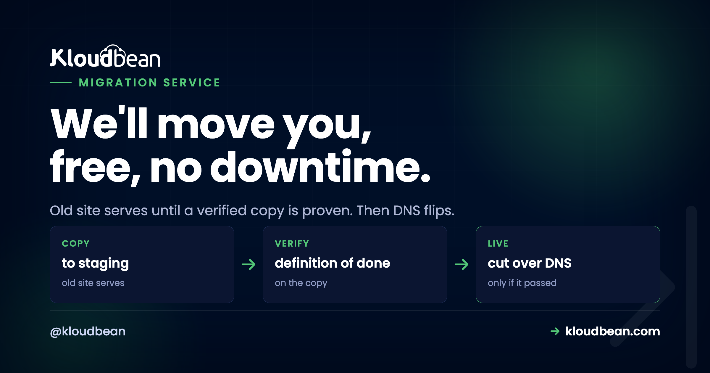

Agency Migration Service: Turn a Dreaded Chore Into a Wedge

Most agencies treat migration as a grim chore: the thing you have to do before the real work, done nervously, one white-knuckle DNS change at a time. That framing costs you money twice. It makes you slow to switch clients onto hosting you actually control, and it hides the fact that "we'll move you, for free, with no downtime" is one of the most persuasive things you can say to a prospect sitting on a host they dislike. Migration is not a chore. It is a service line and a client-acquisition wedge, and this is how to run it as one. The per-site mechanics live in migrating hosting without downtime; this page is the operation around them.
As a repeatable service, not a one-off scramble. There are two shapes: onboarding migration, moving a single new client in, usually offered free because it removes the biggest reason not to switch to you; and portfolio migration, moving a whole book of sites onto one managed account, which you can run as a paid project or absorb to cut your own costs. Run both the same disciplined way: batch similar sites into waves, build and verify each on staging while the old site keeps serving, and move DNS only when the new copy passes a definition of done. Done like this, the client's live site never goes dark, and migration becomes something you sell rather than dread.
Migration is a wedge, not a cost
Start with the commercial point, because it changes how much migration is worth to you.
When a prospect is unhappy with their current host, the single biggest thing stopping them from moving is not price or features. It is the fear of the move itself: downtime, broken links, lost email, a site that comes back wrong. Every agency that says "you'd have to migrate" is reinforcing that fear. The agency that says "we'll handle the entire move for you, for free, and your site won't go down" has removed the objection and, very often, won the client on the spot.
So migration is a sales tool. The cost of moving a site is small and, with free migration assistance, largely not yours to bear, while the value of removing a prospect's biggest hesitation is the whole deal. Treat "we migrate you free" as a headline of your pitch, not a reluctant concession at the end of it.
The two shapes of an agency migration
They look similar technically and are completely different commercially, so decide which one you are doing before you start.
| Onboarding migration | Portfolio migration | |
|---|---|---|
| What moves | One new client's site | Your whole book of existing sites |
| Why | To win and onboard the client | To consolidate onto one managed account you control |
| Who pays | Usually free, it is client acquisition | A paid project, or absorbed to cut your own hosting costs |
| Pace | One site, promptly | Waves, scheduled over weeks |
| Follows into | The onboarding runbook | The consolidation in hosting 20 client apps |
The portfolio case is the one agencies underrate. Moving all your clients onto one managed account is what makes the billing math work, because consolidation is what lowers your per-client cost, as covered in client billing and markup. The migration is the one-time cost of a permanently better cost base.
Run it as a wave, not twenty panics
The mistake at portfolio scale is treating twenty migrations as twenty separate emergencies. Batch them instead.
Group the sites by similarity, the WordPress sites together, the static sites together, the one gnarly custom app on its own, and move a wave at a time. Within a wave, every site follows the same sequence, which is the same disciplined shape as any single zero-downtime move:
- Intake the batch: confirm you have DNS access and source access for every site in the wave before you start any of them.
- Copy each site's files and database to a staging environment on the new account, leaving the live site untouched and serving.
- Verify each staged copy against a definition of done: it renders, logs in, processes a test action, SSL is ready.
- Cut over DNS only for the sites that passed, and only once you are watching. The live site was never down; you simply redirect the world to the verified copy.
- Confirm and close the wave, then start the next.
The per-site mechanics of that cutover, TTL, the DNS flip, verifying propagation, are exactly the zero-downtime migration process; running a wave is just doing it in a batch with a schedule. Lower the DNS TTL on the batch a day ahead so the cutover is quick, a detail covered in how DNS caching and TTL work.
De-risking: why the client's site never goes dark
The fear you are selling against is downtime and data loss, so it is worth being precise about why a disciplined migration produces neither.
Downtime is impossible if you never take the old site down. It keeps serving throughout, and the only moment anything changes for visitors is the DNS cutover, which points them at a copy you have already verified works. If the staged copy fails verification, you do not cut over, and the client never knew there was an attempt. Data loss is prevented by taking a fresh backup before you touch anything and by verifying the copy processes real actions before the flip, so a broken migration is caught on staging rather than discovered in production. Free migration assistance means much of the fiddly work is not even yours to get wrong, and automatic backups mean there is always a known-good point to fall back to.
That is the honest basis for the promise you make the client: your site stays up, and if anything is wrong with the new copy, we simply don't switch to it.
What to actually tell the client
The client does not want the technical plan, they want to stop worrying. Give them the reassurance in plain language, roughly this:
"Here's how the move works, so you can relax about it:
- Your current site keeps running normally the whole time.
- We build and test a full copy on the new hosting first.
- We only switch over once we've confirmed the copy works perfectly.
- If anything looked off, we simply wouldn't switch, and you'd never
have noticed. There's no window where your site is down.
We'll tell you the date we plan to switch, and confirm once it's done."That message does the real work of a migration service, which is emotional as much as technical. A client who believes the move is safe says yes; a client who imagines their site down for a day says no, regardless of how good your process actually is.
Pricing it: free to win, paid for complex
An opinion, held loosely, because the right call depends on the job.
Onboarding migration, moving one new client in, should almost always be free, because it is client acquisition and the cost to you is small, especially with migration assistance doing the heavy lifting. Charging for it reintroduces the exact friction you were trying to remove.
A large or complex portfolio migration is different. Moving fifty sites, some with custom stacks, is a real project with real hours, and it is reasonable to price it as one, or to absorb it deliberately as an investment in a lower cost base once they are consolidated. What you should not do is let the fear of "migration is hard" stop you from consolidating your own clients, because that fear is mostly the chore-framing this article exists to dismantle. Keep specifics out of your public pricing and quote the project; the point here is the structure, not a number.
What a host can and cannot fix here
Migration as a service is only as easy to offer as the platform makes it. On Kloudbean, free migration assistance means the actual moving of files, databases, and configuration is work you can lean on rather than shoulder alone, which is what makes "we'll move you free" a promise you can keep at scale. Staging for WordPress and Laravel is where every migration gets built and verified before a single DNS record changes, automatic backups give the pre-cutover safety net, and free SSL is reissued at the destination so HTTPS is ready the moment you flip over. It all runs from one account across seven clouds, so a portfolio ends up consolidated rather than scattered, which is the whole point of the portfolio migration.
The honest boundary: the platform and the assistance do the heavy technical lifting, but the service is yours to run. Scheduling the waves, choosing what to charge, and above all reassuring the client are the parts only you can do, and they are what turn a capability into a service clients actually buy.
Before you close the tab
The per-site mechanics are migrating hosting without downtime, and the DNS timing detail is how DNS caching and TTL work. A migrated-in client flows into the onboarding runbook; the consolidation payoff is hosting 20 client apps on one server and the cost logic is client billing and markup. The whole operation is the hosting for agencies playbook, and moving a client out again is agency client offboarding.
Make "we'll move you, free, no downtime" your pitch.
Free migration assistance, staging to build and verify before cutover, automatic backups as the safety net, and free SSL reissued at the destination, from one account across seven clouds. Start at kloudbean.com or see pricing.
Free migration assistance · Staging · Automatic backups · Free SSL · One account · Seven clouds
FAQ
Should an agency offer website migration as a service?
Yes, and it is worth more than it costs. The biggest reason a prospect stays on a host they dislike is the fear of moving, so offering to handle the entire migration for free, with no downtime, removes their main objection and often wins the deal. Treat migration as a client-acquisition wedge and a repeatable service line rather than a chore you do reluctantly.
How do you migrate many client sites at once?
In waves, not as twenty separate emergencies. Group sites by similarity, and for each wave copy every site to a staging environment on the new account while the old sites keep serving, verify each staged copy against a definition of done, then cut over DNS only for the sites that passed. Doing it in batches with a schedule keeps a portfolio migration controlled rather than chaotic.
How do you migrate a site without downtime?
Never take the old site down. Build and verify a complete copy on the new hosting first, with the old site serving throughout, and change DNS only once the copy is confirmed working. The only moment anything changes for visitors is that DNS cutover, which points them at a site you have already tested, so there is no window of downtime. The full mechanics are in the zero-downtime migration guide.
Should I charge clients for migration?
Onboarding migration, moving a single new client in, should usually be free, because it is client acquisition and charging for it reintroduces the friction you are trying to remove. A large or complex portfolio migration is a real project you can reasonably price, or absorb deliberately to gain a lower cost base once the clients are consolidated. Match the decision to the size of the job.
What do I tell a client who is nervous about migrating?
Tell them their current site keeps running the whole time, that you build and test a full copy on the new hosting first, and that you only switch over once the copy is confirmed working, so there is no window where their site is down. The reassurance is most of the service; a client who believes the move is safe agrees to it, and a disciplined staging-first process is what makes the reassurance true.
Why migrate a whole portfolio onto one account?
Consolidation lowers your per-client cost and puts every client on hosting you control, which is what makes agency billing margins work and access and backups manageable. The migration is a one-time cost that buys a permanently better cost base and a single dashboard instead of a scattered set of logins. It is the operational foundation the rest of the agency playbook assumes.
What is the riskiest part of a migration?
Cutting over DNS before the new copy is verified. That is the only step that can produce downtime or a broken site in front of visitors, and it is entirely avoidable: verify on staging first, and treat the DNS flip as the last action, taken only on sites that passed. A failed verification should simply mean you do not cut over, with the live site none the wiser.
Does the platform do the migration or do I?
Both, in a good split. Free migration assistance and staging do the heavy technical lifting of copying and verifying, which is what lets you promise a free, safe move at scale. Scheduling the waves, deciding what to charge, and reassuring the client are yours, because they are the service around the technical work rather than the work itself.